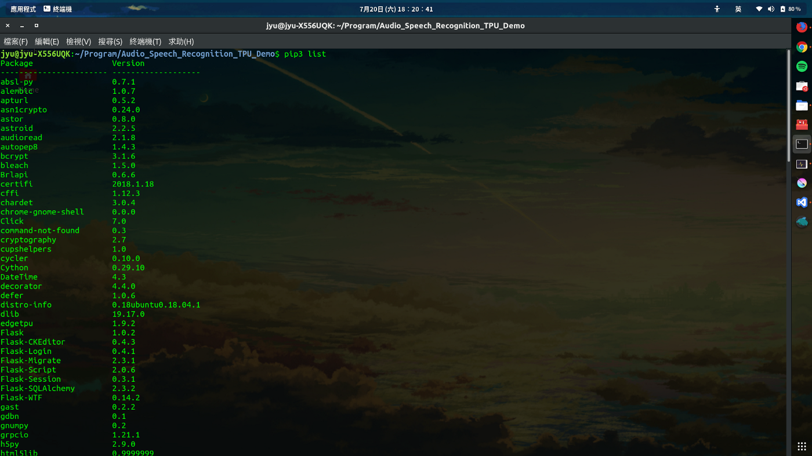
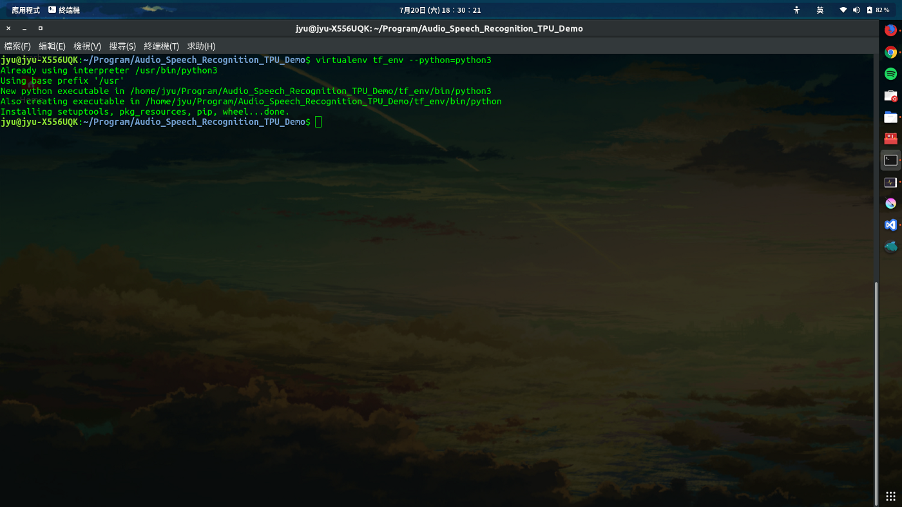
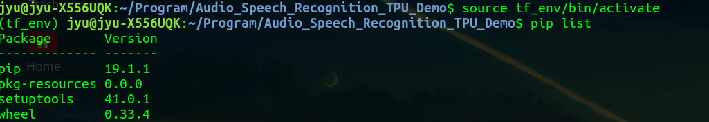
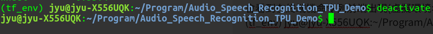
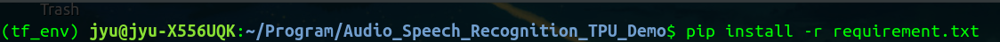
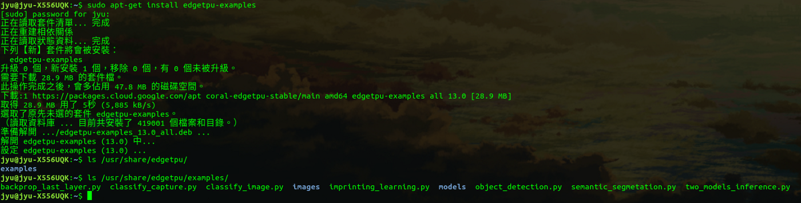
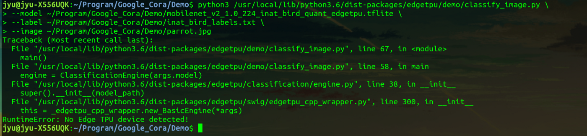
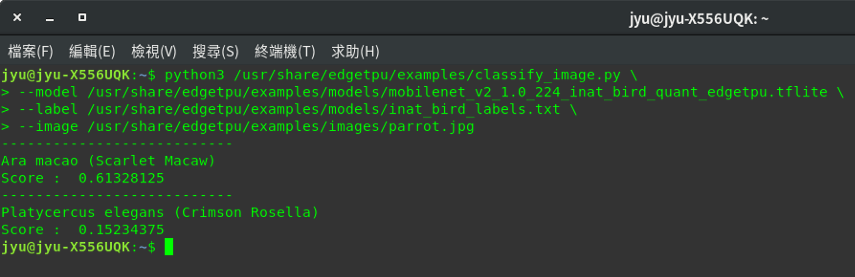
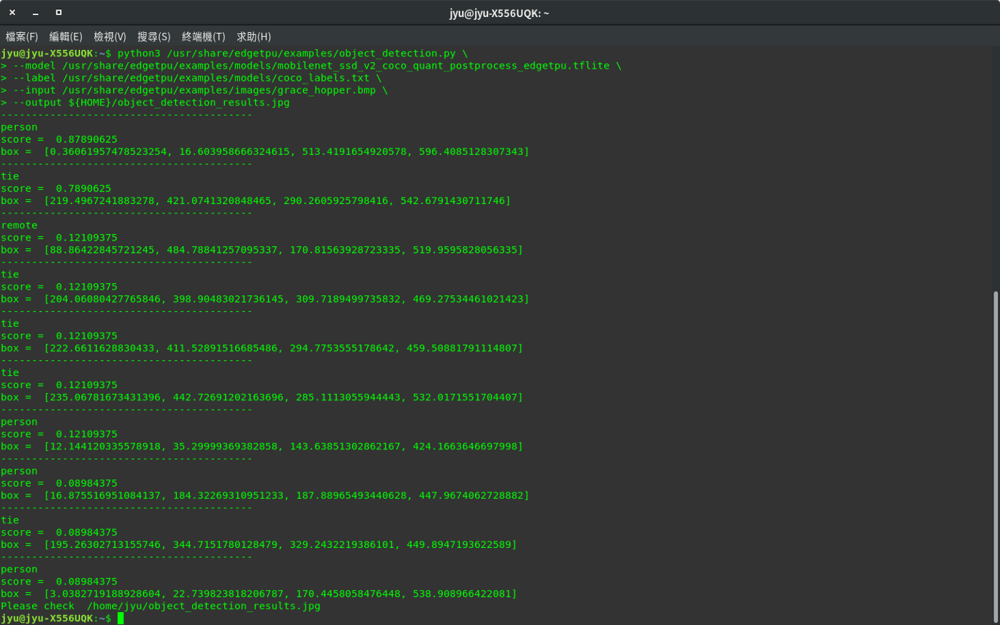
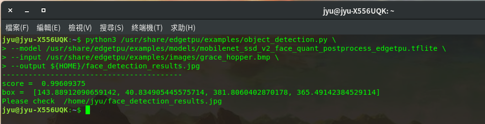

此應用專案為探討如何建置一個簡單語音識別例子，並使用Google Coral USB Accelerator、Tensorflow 搭配在筆記型電腦環境上進行開發實作。
有關於Google Coral說明可參考：https://coral.withgoogle.com/docs/
有關於Tensorflow說明可參考：https://www.tensorflow.org/
使用硬體規格：
後續探討開發重點在於以下幾點：
Ubuntu 18.04.2Python3.61.15.0.dev201906271.14.0.dev2019062701Step 1. 檢查是否有安裝python3-pip
在終端機打以下指令，確認能夠正常顯示當前python3 擁有Package清單
pip3 list

如果未正常顯示代表未安裝python3-pip，在終端機打以下指令進行安裝
sudo apt-get install python3-pip
Step 2. 安裝虛擬環境virtualenv應用在Python3環境
在終端機打以下指令，安裝虛擬環境virtualenv
sudo apt-get install virtualenv
Step 3. 建置專案python虛擬環境
在終端機打以下指令，進行建立虛擬環境
virtualenv 自訂虛擬環境名稱 --python=指定python版本
假設要建立一個虛擬環境名稱為tf_env，並且指定此虛擬環境使用python版本為python3，此python3與/usr/bin/python3相應連結，也就是虛擬環境所建置python版本環境以它作為模板下去建置，但是在python package方面只會產生最基本配置，如果有額外安裝的package並不會一起建置在虛擬環境內。
virtualenv tf_env --python=python3

在終端機打以下指令，進入建置python虛擬環境內
source 自訂虛擬環境名稱/bin/activate
以此例建立虛擬環境tf_env為例
source tf_env/bin/activate
會看到在終端機命令列前端出現(虛擬環境名稱)如下

在終端機打以下指令，可離開虛擬環境
deactivate

Step 4. 在python虛擬環境安裝必要python package
需要先進入python虛擬環境，才能進行安裝python package，否則會以電腦上實機python環境為主。
python package清單如下：
以上套件清單會建立在requirement.txt檔案內，並且以讀取套件清單檔案形式進行安裝。
pip install -r requirement.txt

由於Tensorflow 最近改版更新，原本使用tf-nightly 1.15.0.dev20190627已被移除安裝來源，需要使用 Tensorflow 1.15來取代使用
tensorflow 1.15.2 ：https://pypi.org/project/tensorflow/1.15.2/
pip install tensorflow==1.15.2
Step 5. 安裝Edge TPU runtime
參考官方說明文件：
https://coral.ai/docs/accelerator/get-started/#1-install-the-edge-tpu-runtime
將官方edgetpu來源加入置sources清單內
echo "deb https://packages.cloud.google.com/apt coral-edgetpu-stable main" | sudo tee /etc/apt/sources.list.d/coral-edgetpu.list
下載官方來源金鑰並加入
curl https://packages.cloud.google.com/apt/doc/apt-key.gpg | sudo apt-key add -
進行更新將來源套件下載
sudo apt-get update
執行套件安裝
sudo apt-get install libedgetpu1-std
Step 6. 安裝 TensorFlow Lite Library
參考官方說明文件：
https://coral.ai/docs/accelerator/get-started/#2-install-the-tensorflow-lite-library
https://www.tensorflow.org/lite/guide/python#install_just_the_tensorflow_lite_interpreter
pip install https://dl.google.com/coral/python/tflite_runtime-2.1.0.post1-cp36-cp36m-linux_x86_64.whl
Step 7. 安裝 Edge TPU Python API Library
參考官方說明文件：
https://coral.ai/docs/edgetpu/api-intro/#install-the-library-and-examples
sudo apt-get update
sudo apt-get install python3-edgetpu
需注意一點的是，這裡所安裝的 Edge TPU Python API Library 是存在實體環境 python裡面，並不存在上面步驟所建置虛擬環境內，執行調用相關 Edge TPU Python API時，請在非虛擬環境底下進行。
Step 8. 執行Edge TPU Demo範例
這裡執行的範例是直接使用Edge TPU Python API Demo，關於使用TensorFlow Lite API 官方說明已有介紹，在此不再執行使用TensorFlow Lite API Demo。
參考官方說明文件：
https://coral.withgoogle.com/docs/edgetpu/api-intro/
https://github.com/google-coral/edgetpu
取得examples內容，安裝完畢後所有檔案會放置在/usr/share/edgetpu/examples
sudo apt-get install edgetpu-examples

運行之前，請先插入Google Coral USB Accelerator在USB3.0，不然會在運行時發生例外錯誤 “RuntimeError: No Edge TPU device detected!”

Image classification example
https://coral.ai/examples/classify-image/
執行範例程式， 主程式檔案 classify_image.py
python3 /usr/share/edgetpu/examples/classify_image.py \
--model /usr/share/edgetpu/examples/models/mobilenet_v2_1.0_224_inat_bird_quant_edgetpu.tflite \
--label /usr/share/edgetpu/examples/models/inat_bird_labels.txt \
--image /usr/share/edgetpu/examples/images/parrot.jpg
—-model 指定使用tflite模型來源—-labels 指定分類標籤來源—-input 指定輸入圖片來源
Object detection example
Run the example for object detection
執行範例程式， 主程式檔案 object_detection.py
python3 /usr/share/edgetpu/examples/object_detection.py \
--model /usr/share/edgetpu/examples/models/mobilenet_ssd_v2_coco_quant_postprocess_edgetpu.tflite \
--label /usr/share/edgetpu/examples/models/coco_labels.txt \
--input /usr/share/edgetpu/examples/images/grace_hopper.bmp \
--output ${HOME}/object_detection_results.jpg

Run the example for face detection
執行範例程式， 主程式檔案 object_detection.py
python3 /usr/share/edgetpu/examples/object_detection.py \
--model /usr/share/edgetpu/examples/models/mobilenet_ssd_v2_face_quant_postprocess_edgetpu.tflite \
--input /usr/share/edgetpu/examples/images/grace_hopper.bmp \
--output ${HOME}/face_detection_results.jpg
